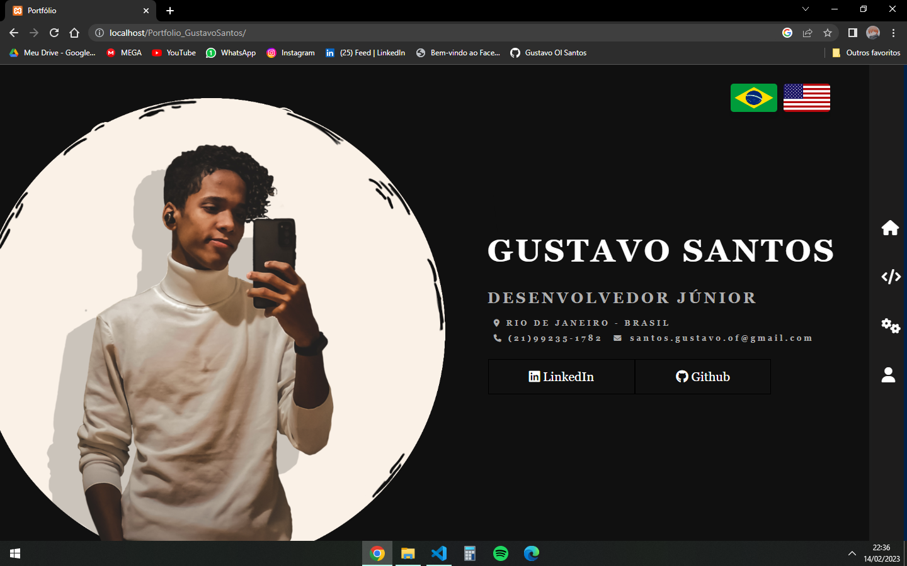
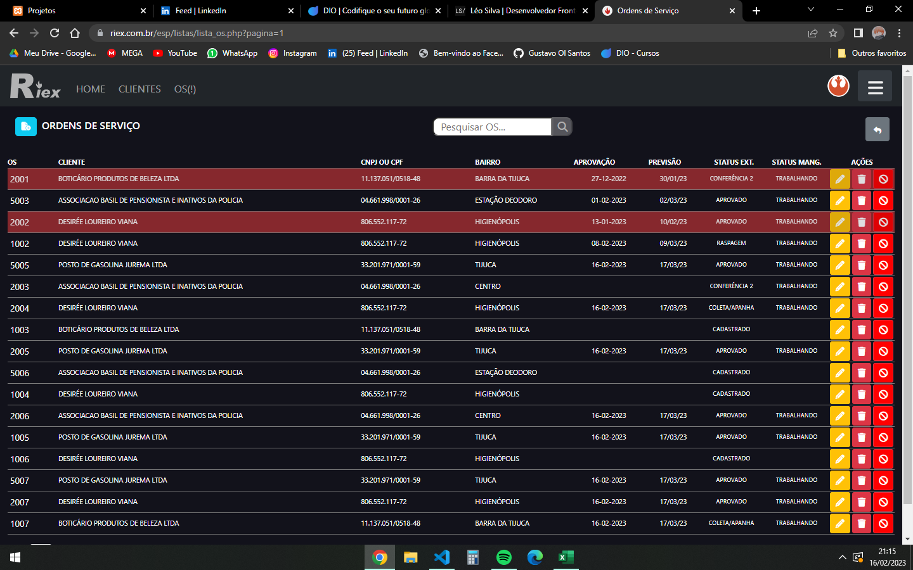

Alguns projetos
Portfólio

Exatamente esse que você está acessando!
Senti a necessidade de ilustrar meus conhecimentos e apresenta-los de forma mais didática, além de ser um ótimo exercício, trazendo alguns desafios pessoais, que agregam meus conhecimentos de alguma forma. Como o intuíto do Portfólio, além de introduzir e mostrar minhas habilidades, também é me apresentar como pessoa e desenvolvedor, diversas escolhas ao decorrer do site foram feitas a partir do meu gosto, como por exemplo os tons mais escuros, tendo em vista que sou apaixonado pelo "Dark-Mode" e os detalhes em azul, por ser a cor que me sinto mais confortável ao trabalhar.
Nele, foi utilizado apenas html5, css3, Javascript e Jquery.
Senti a necessidade de ilustrar meus conhecimentos e apresenta-los de forma mais didática, além de ser um ótimo exercício, trazendo alguns desafios pessoais, que agregam meus conhecimentos de alguma forma. Como o intuíto do Portfólio, além de introduzir e mostrar minhas habilidades, também é me apresentar como pessoa e desenvolvedor, diversas escolhas ao decorrer do site foram feitas a partir do meu gosto, como por exemplo os tons mais escuros, tendo em vista que sou apaixonado pelo "Dark-Mode" e os detalhes em azul, por ser a cor que me sinto mais confortável ao trabalhar.
Nele, foi utilizado apenas html5, css3, Javascript e Jquery.
Controle de Ordens de Serviço

Uma aplicação Web interna para realizar o controle das Ordens de Serviço(OS) de uma empresa de Equipamentos de Incêndio.
Ele torna o trabalho mais ágil e organizado, já que todas as informações de cadastro de clientes, nº de OS, produtos, cancelamento, aprovação e datas são processadas e podem ser editadas no próprio Website. Através de um Qr Code, um microcontrolador poderia informar onde a OS se encontra, o quanto falta para terminar o serviço e quais processos já foram executados.
Nesse projeto, eu trabalhei em conjunto com uma pessoa, ambos atuando com Full-Stack e um supervisor. Durante o desenvolvimento, pude conhecer novas linguagens, compatilhar conhecimentos e adquirir novas habilidades, inclusive o uso de uma framework de Css, php em geral, modais, Dark Mode e requisições assíncronas com o Javascript.
Nele, foi utilizado:
Para Front-End: html5, css3, Bootstrap, Javascript e Jquery.
Para Back-End e Bancos de Dados: PhP, Python e MySQL.
Para os Microcontroladores: C/C++.
Ele torna o trabalho mais ágil e organizado, já que todas as informações de cadastro de clientes, nº de OS, produtos, cancelamento, aprovação e datas são processadas e podem ser editadas no próprio Website. Através de um Qr Code, um microcontrolador poderia informar onde a OS se encontra, o quanto falta para terminar o serviço e quais processos já foram executados.
Nesse projeto, eu trabalhei em conjunto com uma pessoa, ambos atuando com Full-Stack e um supervisor. Durante o desenvolvimento, pude conhecer novas linguagens, compatilhar conhecimentos e adquirir novas habilidades, inclusive o uso de uma framework de Css, php em geral, modais, Dark Mode e requisições assíncronas com o Javascript.
Nele, foi utilizado:
Para Front-End: html5, css3, Bootstrap, Javascript e Jquery.
Para Back-End e Bancos de Dados: PhP, Python e MySQL.
Para os Microcontroladores: C/C++.